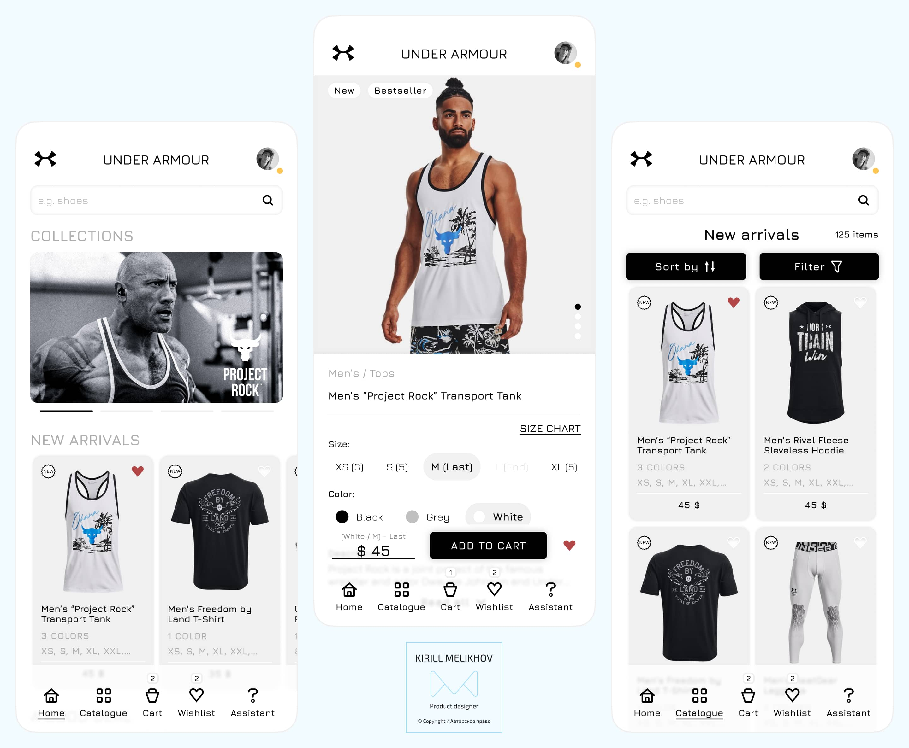

"Under Armour" is a globally recognized sportswear brand known for its high-performance athletic apparel and accessories. With a large customer base and a wide range of products, "Under Armour" recognizes the need to provide a seamless and engaging shopping experience for its customers. To achieve this, the company has decided to undertake an app design project to create a user-friendly and visually appealing mobile application.
Project goals
The primary objective of the project was to develop a mobile application for a sportswear store that prioritizes a user-oriented approach, boasts a clean and visually captivating design, enhances the overall user experience, promotes repeat usage, and boosts user engagement.
To achieve this goal, careful consideration was given to crafting a design that puts the user at the center. User-centric principles were employed to ensure that the app seamlessly caters to the needs and preferences of its target audience. By understanding the user's mindset, motivations, and pain points, the design aimed to provide an intuitive and efficient browsing experience, making it easy for users to find and purchase their desired sportswear products.
As part of the project, several key tasks were defined:
Enhance the user interface. The aim was to improve the application's user interface, making it more intuitive and user-friendly. This involved simplifying navigation and ensuring ease of use throughout the app. By streamlining the interface, users could seamlessly browse and access different features and information.
Simplify navigation and usage. The goal was to make the application easy to navigate, ensuring that users could quickly find the information or products they were looking for. By optimizing the user flow and organizing content in a logical manner, the application became more user-friendly and efficient.
Provide useful functions and information. The focus was on offering valuable features and information within the application. This included providing detailed product descriptions, sizing guides, customer reviews, and other relevant information to assist users in making informed purchasing decisions. By offering such useful functions and information, the application aimed to enhance the overall user experience.
Personalized recommendations. Implementing a recommendation system was a crucial task. By leveraging user preferences and their history of viewed products, the application could provide personalized recommendations. This feature aimed to enhance user engagement, facilitate product discovery, and ultimately improve customer satisfaction.
Increase customer loyalty and retention. The objective was to foster customer loyalty and retention by offering exclusive offers, discounts, and promotions within the application. By providing app users with special incentives, the goal was to encourage repeat usage and create a sense of exclusivity, thereby strengthening customer loyalty.
Implement useful features. The project aimed to incorporate additional features that would be valuable to future users. For example, the inclusion of a wardrobe feature would allow users to save and organize their favorite products or create outfit combinations. These features aimed to enhance the overall functionality and usefulness of the application.
By addressing these tasks, the project aimed to create an application that not only improved the user interface and simplified navigation but also provided personalized recommendations, increased customer loyalty, and offered useful features for a seamless and engaging user experience.
Case Study
UX Research
The design process commenced with comprehensive research aimed at gaining a deep understanding of Under Armour's target audience as well as analyzing the company's competitors. Through interviews with the target audience and a thorough competitive analysis, valuable insights were obtained, highlighting pain points, preferences, and opportunities for improvement.
During the competitive audit, several notable issues were identified. These included complex user flows, small and hard-to-read fonts, challenging catalog navigation, cluttered designs, and other usability challenges. Recognizing these shortcomings allowed for a focused approach in addressing and improving upon them in the design process.
Additionally, while evaluating the competition, several strengths stood out. These included features such as augmented reality (AR) fitting functions, customization options like "Nike By You" that enable users to create their own designs, and product search capabilities using photos. These strengths served as valuable references and sources of inspiration in the design process, highlighting successful features that could be adapted and integrated into the Under Armour experience.
"Персона, представляющая одну из групп пользователей приложения Under Armour"
Notably, it is important to highlight that none of the competitors offered a wardrobe function, which allows users to group their previously purchased goods. This unique feature presented an opportunity for Under Armour to differentiate itself and provide added value to its users. By incorporating a wardrobe function, users would be able to conveniently organize and manage their purchased items, enhancing their overall shopping experience.
By conducting thorough research, identifying pain points, examining competitor strengths and weaknesses, and recognizing untapped opportunities, the design process was informed and guided. The aim was to create a user-centric and competitive design solution that addresses the needs and preferences of Under Armour's target audience while incorporating innovative features that set the brand apart.
To ensure the usability and effectiveness of the Under Armour online store's mobile application, a comprehensive stage of usability testing was conducted. The primary objective was to gather valuable user feedback and analytical insights to identify any usability issues, pain points, or areas that required improvement in the design and functionality of the application.
"Тестирование юзабилити с одним из участников исследования"
During the usability testing phase, a group of representative users was selected to interact with the application. These users were given specific tasks to perform, while their interactions and feedback were carefully observed and recorded. This approach allowed for the identification of potential challenges or areas where the application may not meet user expectations.
The usability testing process provided valuable insights into the user experience, highlighting any difficulties or frustrations encountered by participants. User feedback and observations were collected, including comments on the clarity of navigation, ease of product search, checkout process, and overall satisfaction with the application. These insights helped to pinpoint specific areas for improvement, allowing for iterative design refinements.
Final Design
The mobile application of the Under Armour online store showcases a modern and sleek minimalistic design that significantly enhances the user interface and effectively draws attention to the store's products. The design aesthetics align with contemporary design trends, incorporating ample white space, typography, and imagery to create an engaging and visually appealing experience.
The minimalist design philosophy ensures that the application interface is streamlined and clutter-free. Unnecessary visual elements and distractions are eliminated, allowing users to easily navigate and focus on the core features and content. This simplicity promotes a seamless user experience, making it effortless for users to discover and interact with the desired products.

Visual elements within the design are carefully crafted to strike a balance between aesthetics and functionality. The application employs elegant and clean visuals that create a sense of sophistication and professionalism. Intuitive iconography is utilized to provide clear and recognizable cues, facilitating easy navigation and enhancing usability. The consistent color palette reinforces the brand's identity and provides a cohesive visual experience across the application.
In addition to its modern and minimalistic design, the mobile application of the Under Armour online store features an AI-powered assistant that enhances the user experience. The AI assistant acts as a virtual guide, offering personalized recommendations, assisting in product searches, and providing valuable information to users.
Leveraging the capabilities of artificial intelligence, the AI assistant enhances convenience, saves time, and elevates the level of customer service. By analyzing user preferences, purchase history, and browsing behavior, the assistant delivers tailored product recommendations, ensuring that users discover items that align with their interests and needs. This personalized approach creates a more engaging and relevant shopping experience.
The AI assistant also assists users in navigating the application and finding desired products. Through natural language processing and intelligent search algorithms, users can easily communicate their preferences and receive accurate and efficient search results. This streamlines the shopping process and empowers users to find what they're looking for more effectively.
Furthermore, the AI assistant provides valuable information and insights to users. Whether it's providing detailed product descriptions, offering styling tips, or sharing information on the latest trends, the assistant serves as a knowledgeable resource that enhances the user's understanding of the products and the brand.
To enhance the user experience and provide added convenience, the mobile application of the Under Armour online store incorporates a practical wardrobe function. This feature enables users to organize their purchases into personalized collections or groups, facilitating easy management of their clothing and accessories.
The Wardrobe feature empowers users to create custom categories tailored to their specific needs, such as sports equipment, golf essentials, or fitness gear. By grouping their items in this manner, users can quickly access and view the products they desire, saving time and effort when planning and coordinating their outfits.
The functionality of the wardrobe function extends beyond simple organization. It enables users to have a comprehensive overview of their clothing and accessories, allowing them to assess their collection and make informed decisions when making additional purchases. Whether it's selecting the appropriate attire for a specific activity or ensuring they have the necessary equipment, the wardrobe feature streamlines the process and enhances user efficiency.
Conclusion
In conclusion, the design of the mobile application for the Under Armour online store has successfully achieved its objectives. Through comprehensive research, iterative design processes, and usability testing, the application now offers a modern and intuitive minimalistic design that aligns with Under Armour's corporate identity while delivering a visually appealing interface.
The integration of an AI-powered assistant brings a personalized touch to the user experience, providing tailored product recommendations and assistance. This enhances convenience and engagement, allowing users to make informed choices and fostering a deeper connection with the brand. Furthermore, the inclusion of the "wardrobe" feature enables users to categorize their purchases, promoting organization and planning of their clothing and accessories.
Overall, the final design of the Under Armour mobile app showcases the power of user-centric design and the integration of innovative features. It not only meets the needs and preferences of Under Armour's target audience but also increases conversion rates, customer satisfaction, and brand loyalty.
By providing a seamless and enjoyable shopping experience, the application serves as a testament to the successful combination of design, technology, and customer focus. This positions Under Armour as a leader in the digital market, enabling them to forge meaningful connections with customers, drive sales, and further strengthen their brand in the realm of mobile commerce.